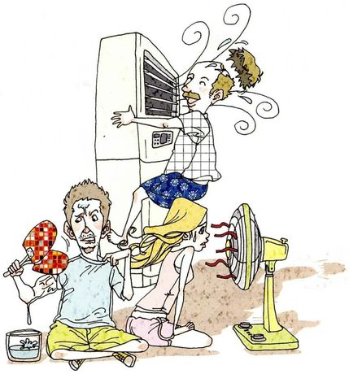
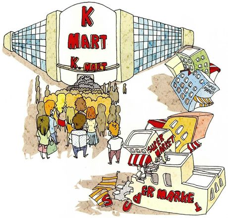
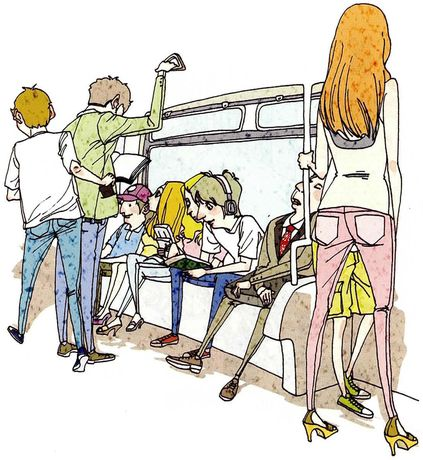
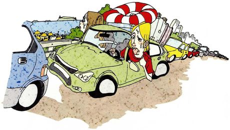
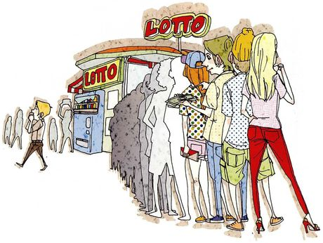
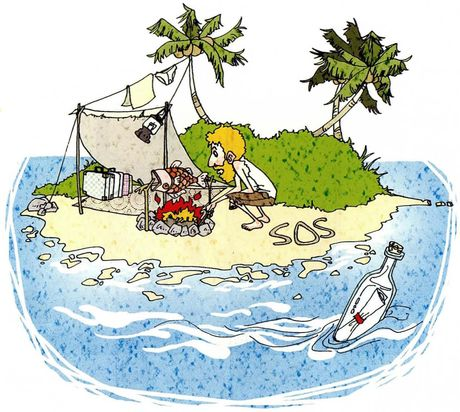

Part IV 开始了，题型又变了：每页一张大图，问的是 What is happening? —— 先描述画面，再联系自己，最后表态。这一课最容易犯的错是只答后面的个人问题，跳过描述。可是题目里那个 What is happening? 才是第一问，而且它最能看出你的词汇量：一张图里藏着七八个可以说的细节，说得越多越像在真看图，而不是在背话题。第 6 题还引入了虚拟语气（If you were stranded…），这是本课唯一的语法关口。
描述画面 — 用现在进行时，从整体到细节Three people are trying to cool down. One man is clinging to the air conditioner, and the other two look hot and annoyed.
联系自己 — 换成一般现在时讲习惯I use a fan rather than an air conditioner, mainly because of the bill.
表态 — 加理由，最好再加一句让步I think the bill is a real reason, but I'd rather pay it than sleep badly.
描述画面时，按这个顺序找细节。 ① 有几个人、在哪（谁和谁，什么场所）
② 每个人在做什么（现在进行时：is holding / are standing）
③ 表情和状态（look exhausted / look bored / are sweating）
④ 一个具体的物件或数字（这才是让人相信你真看了图的东西）
四个都说，描述就完整了。
A man is sitting on the floor with a hand fan. People are queueing outside a Lotto shop.
图里一贯的状态、特征
一般现在时
The shop looks crowded. Everyone looks tired.
你自己通常怎么做
一般现在时 + 频率
I carry a small fan in summer. I don't usually buy lottery tickets.
描述图不要说 The man sits…
除非你是在说一个习惯。图画上正在发生的动作要用进行时：
✗ A man sits on the floor and holds a fan. ✓ A man is sitting on the floor, holding a fan. 这是本课最容易犯的语法错误，因为它不影响理解，所以自己很难察觉。
If I were stranded on an island, I would look for water first.
be 动词一律用 were（不管主语是 I / he / she）
If + there were no hope, 主语 + would + 原形
If there were no hope of going home, I would build a shelter and wait.
there be 结构里也用 were
一个立刻能用的技巧：would 后面永远接原形。
不管前面是什么，would go / would build / would try，绝不加 s、不加 ed。
这一课第 6 题两句都用得到，说对了立刻显得语法过关。
C · 描述图用的高频动词块（Part IV 通用）
look + 形容词
They look exhausted. / She looks annoyed. —— 描述表情最省事
be crowded with
The shop is crowded with people.
queue up / stand in line
They're queueing up outside.（英式）/ standing in line（美式）
at the front / at the back
描述位置。A woman at the front is holding a ticket.
in the background
There's a supermarket in the background. 补远处细节
on the left / on the right
最基础也最有用，别怕用
03六个场景：怎么描述，怎么表态
每张卡三段：What is happening 把图里的细节尽量说全（这是第一问，别跳过），What it asks you 说清后面几问要什么，Say it like this 给三档完整答案：① 描述加一句 / ② 描述 + 你的做法 / ③ 再加观点和让步。
01

Everyone trying to stay cool
What is happeningThree people in a hot room. One man has climbed right up the air conditioner and is pressing his face into the vent. A woman is kneeling in front of a floor fan. Another man is sitting cross-legged holding a hand fan, with a bowl of ice beside him, and he looks furious that his friend is hogging the cold air.
What it asks you三问：你夏天带扇子吗 → 你在家用电扇还是空调、为什么 → 会不会担心电费。第二问的 Why 是重点。
Say it like this①They're all trying to cool down — one man is clinging to the air conditioner, and the others are making do with a fan and some ice. ②Nobody looks comfortable. I don't carry a fan in summer, but I do use a fan at home rather than the air conditioner, mostly because of the electric bill. ③They're doing everything at once — air conditioning, a floor fan, a hand fan and a bowl of ice — and one person has taken the best spot for himself. I'd say that's the honest picture of a heatwave. I use a fan rather than the air conditioner and I do think about the bill, though I'd admit the real reason is that I don't like the dry air. The money is a convenient excuse.
02

A big store and the small shops around it
What is happeningA huge K Mart with a big crowd pushing in through the entrance. Next to it, the small local supermarkets are literally falling apart — buildings tilting, the letters of their signs breaking off and lying on the ground.
What it asks you三问：图里发生什么 → 你在小店买东西的理由 → 你在超市买东西的理由。后两问是并列的，两个都要答。
Say it like this①A crowd is pouring into a big chain store, and the small supermarkets next to it are collapsing. ②I buy from small shops for things I need one of — vegetables, a repair, anything where I want to ask a question. I go to the supermarket when I need a lot of things at once. ③The picture is almost an argument: the big store is packed and the small ones are crumbling beside it. I use both, but for different reasons. The local shop is quicker and the owner knows me, so I go there for vegetables and small things. The supermarket wins on price and choice, and honestly on time, because I can get everything in one trip. I'd rather the small shops survived, which is why I don't do everything at the supermarket.
03

A crowded subway carriage
What is happeningA busy subway carriage. Two men are standing by the door, one reading a newspaper. On the seats, a man in headphones is leaning over to look at the phone of the girl next to him, and a man in a suit has fallen asleep. A tall woman in heels is holding the pole. Nobody is talking to anybody.
What it asks you三问：这些人在做什么 → 你常坐地铁吗、为什么 → 你在地铁上做什么。
Say it like this①They're riding the subway — reading, looking at phones, or asleep. One man is even peeking at the screen of the girl sitting next to him. ②I take it almost every day. It's the only way to cross the city without sitting in traffic, and it's cheap. ③Nobody is talking, which the picture captures well — and the man reading his neighbour's phone is a very real detail. I use the subway daily, mainly for the predictability — a thirty-minute journey is thirty minutes, whatever the traffic is doing. On the train I read, or more honestly I look at my phone and then feel vaguely guilty about it. I've tried reading on my phone instead, which is the same thing with better branding.
04

A traffic jam on the way to the beach
What is happeningA long queue of cars nose to tail along a coastal road, with the beach just visible ahead. A red-and-white swimming ring is tied to the roof of the green car, and the driver is hanging out of the window, sweating, tongue out, completely worn out. Everyone is going to the same place at the same time.
What it asks you四问：图里发生什么 → 你哪个季节度假、下次想去哪 → 平均花多少钱 → 最省钱的度假方式。这是本课问题最多的一题。
Say it like this①Cars are stuck in a long line along the coast — everybody heading for the beach at once. One driver is hanging out of his window looking exhausted, with a swimming ring tied to his roof. ②I usually go in autumn, when it's quieter. For my next one I'd like somewhere with mountains rather than a beach, partly to avoid exactly this picture. ③It's a traffic jam on a holiday weekend — the beach is right there and nobody's moving. I travel in autumn rather than summer, and the reason is mostly this photograph: everyone's holidays fall at the same time. I spend very little on average, maybe two thousand, because I stay with family. The cheapest way to enjoy a vacation, in my experience, is to go somewhere you already know and take fewer things — the expense is nearly always the travelling and the gear, not the time itself.
05

A queue outside a lottery shop
What is happeningA long line of people waiting outside a shop with Lotto signs on it. The queue stretches back past the edge of the drawing. One person is walking past without joining. Several people in the queue are looking at slips of paper.
What it asks you三问（第三问分两小问）：图里发生什么 → 你定期买彩票吗 → 中过吗、中了多少、为了中这些花过多少。课本脚注：hit the numbers = 中彩票。
Say it like this①People are queueing outside a Lotto shop — a very long line, and one person walking past who isn't joining it. ②I don't buy tickets regularly. I've bought one or two in my life, and I've never hit the numbers. ③A long queue outside a lottery shop, which tells you what day it is. I don't buy them regularly — I've bought maybe three in my life out of curiosity, and never won anything. The last question is the sharp one: if someone won a hundred and had spent two hundred to get there, they've lost. I've noticed nobody counts the losing weeks, which is exactly how the whole thing works.
06

Stranded on a desert island
What is happeningOne person alone on a tiny island: a tent made from a sheet, a campfire, some belongings, and the letters SOS written in the sand. A bottle with a note inside is floating away on the water.
What it asks you三问都是假设：你会先做什么 → 如果没有回家的希望你会做什么 → 给家人写一封信。课本脚注：stranded on = 被困在某处无法离开。要用虚拟语气。
Say it like this①Someone is stranded alone — there's a tent, a fire, and SOS written in the sand, and a bottle with a message is drifting out to sea. ②If I were stranded there, I'd deal with water first, then shelter, then a signal. If there were no hope of going home, I'd stop waiting and start living — build something properly, learn what I could eat. ③One person, a makeshift tent, a fire, and SOS in the sand with a message in a bottle — which is either hope or theatre, I'm not sure which. If I were stranded, I'd find water before anything else, because everything else can wait two days and water can't. If there were no hope of rescue, I'd give myself a week to grieve and then start building, because waiting is the thing that would actually kill me. As for the letter — I'd write it, and I'd try to make it funny, because that's the only true thing I could send.
queue up outside / stand in line 英式 queue，美式 stand in line
排队
traffic jam
/ˈtræfɪk dʒæm/
stuck in a traffic jam
堵车
exhausted
/ɪɡˈzɔːstɪd/
Everyone looks exhausted. 筋疲力尽。比 tired 重
精疲力尽
look + 形容词
/lʊk/
They look annoyed / bored / comfortable. 描述表情最省事的结构
看起来
electric bill
/ɪˈlektrɪk bɪl/
worry about the electric bill
电费
heatwave
/ˈhiːtweɪv/
during a heatwave 热浪。描述第 1 题最好用
热浪
cool down
/kuːl daʊn/
trying to cool down
降温
C · 表达偏好与取舍
表达
音标
用法
中文
rather than
/ˈræðər ðæn/
I use a fan rather than the air conditioner. 连接同类成分
而不是
I'd rather… than…
/aɪd ˈræðər/
I'd rather pay it than sleep badly. 宁可
宁愿
mostly because
/ˈmoʊstli bɪˈkɔːz/
mostly because of the bill 主要因为。承认还有别的原因
主要因为
wins on
/wɪnz ɑːn/
The supermarket wins on price and choice. 在某方面胜出
在……占优
in my experience
/ɪn maɪ ɪkˈspɪriəns/
In my experience, the expense is the travelling. 以我的经验
以我的经验
the sharp one
/ðə ʃɑːrp wʌn/
The last question is the sharp one. 最犀利的那一个
最犀利的一个
deal with sth first
/diːl wɪð/
I'd deal with water first. 先处理某事
先应付
06老师大概率会问的问题
Part IV 的老师追问一定往「你的生活」上引。这一课尤其如此：六张图都是日常场景，他一定会问你自己怎么过夏天、怎么花钱。
Which of these six scenes do you recognise from your own life?
The subway one, completely — the standing, the phones, the silence. And the big store versus the small shops, because that's happening on my street right now: two shops have closed since last year and the supermarket at the end has doubled its floor space. The heatwave one too, though my solution is less dramatic. I just lie very still.
Is it better to shop at small local shops or big supermarkets?
For me, both — but the interesting part is that the choice isn't really about me. If everyone makes the rational individual choice, the small shops disappear, and then the supermarket has no competition and the prices go up. So buying from the local shop is slightly against my own interest in the short term and in my interest in the long term. I do it for vegetables and I don't pretend it's enough.
用「个人理性选择的集体后果」来解释，是很成熟的思路，而且它承认「我做得也不够」，没有说教感。
Why do people buy lottery tickets when the odds are so bad?
Because they're not buying a chance to win — they're buying a few days of imagining. Two yuan for a weekend of "what if I did" is cheap entertainment, and I don't think that's stupid. What worries me is when the same person is spending money they need, and the shops are always in the poorest neighbourhoods. So the ticket isn't the problem; the amount is.
If you were stranded on an island, what's the first thing you'd actually do — honestly?
Honestly? I'd probably spend the first hour doing something useless, like checking my phone has no signal and walking the whole shoreline. The sensible answer is water, and I know that, but I don't think anyone behaves sensibly in the first hour. So I'd give myself an hour of panic and then start looking for fresh water, which is the only thing that can't wait.
In some specific ways, yes — the crowds, the rents, the queues outside a lottery shop. But I'd be careful with the general claim, because thirty years ago the same city had worse air, fewer hospitals and no subway at all. So what's got worse is mostly density, and what's got better is nearly everything else. What I notice is that people compare the city to their idea of the countryside rather than to the city ten years ago.
把笼统的判断拆成「具体变差的部分」和「总体变好的部分」，再指出比较对象的问题。这是 Part IV 最有分量的回答方式。
Which question in this lesson was hardest?
The lottery one, because the last part is arithmetic: how much did you spend to win that much. It's a question that already contains the answer, and you can't answer it without either admitting the maths or dodging it. Most people dodge. I'd rather answer it and say the number, even if it's embarrassing.
指出「题目本身已经包含答案」，并说明为什么难 —— 这是对题型结构的分析，而不是抱怨。Most people dodge 这一句也很精确。
07这节课最容易犯的错
这一课的错误集中在两处：描述图用错时态，以及虚拟语气用了直陈式。
✗A man sits on the floor and holds a fan. ✓A man is sitting on the floor, holding a fan.
描述图上正在发生的动作要用进行时。本课头号错误，因为不影响理解所以很难自查。
✗If I am stranded on an island, I will look for water. ✓If I were stranded on an island, I would look for water.
与现在事实相反的假设用虚拟语气：if + 过去时，would + 原形。第 6 题两句都考这个。
✗If I was stranded, I would… ✓If I were stranded, I would…
虚拟语气里 be 动词一律用 were，不管主语是 I / he / she。这是和真实条件句唯一的形式区别。
✗I would went home. ✓I would go home.
would 后面永远接动词原形，不是过去式。说快了最容易犯。
✗The shop is crowd with people. ✓The shop is crowded with people.
crowd 是名词或动词，描述「挤满」要用形容词 crowded。
✗Everyone are looking at their phones. ✓Everyone is looking at their phones.
everyone / everybody 作主语时动词用单数，但后面可以用 their 指代。这是英语的一个特例。
✗I'd rather to pay the bill than sleep badly. ✓I'd rather pay the bill than sleep badly.
would rather 后面接动词原形，不加 to。
✗There are many peoples queueing outside. ✓There are a lot of people queueing outside.
people 本身就是复数，不能加 s。peoples 只用于「多个民族」这种罕见含义。